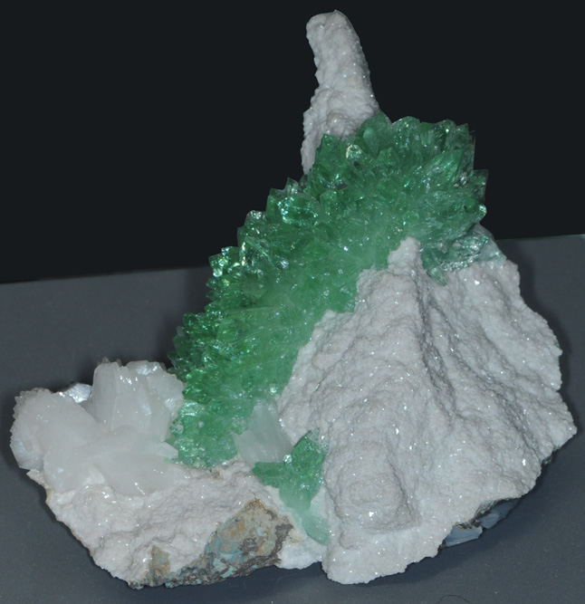
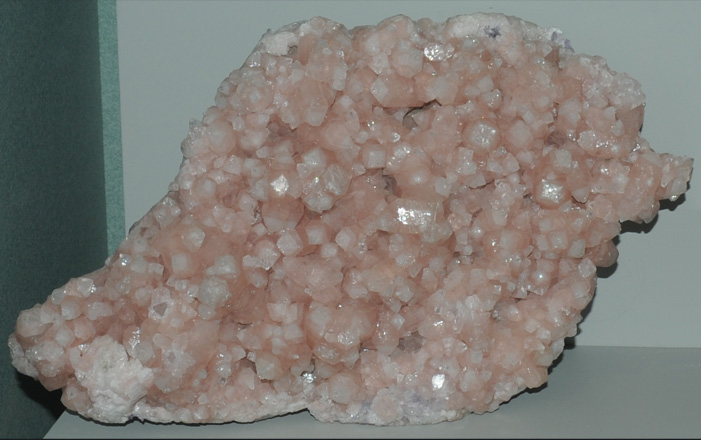
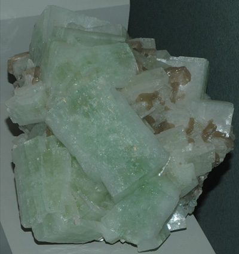
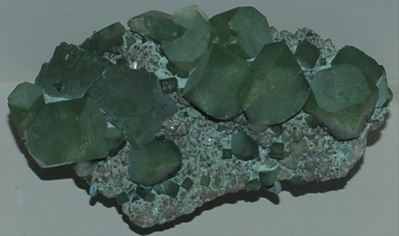
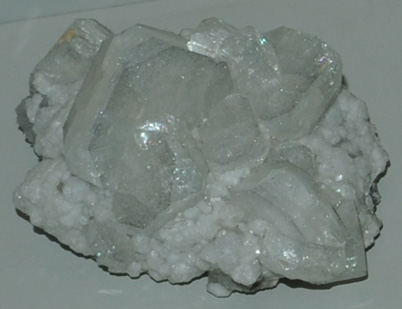
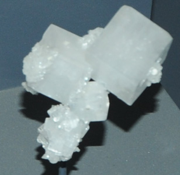
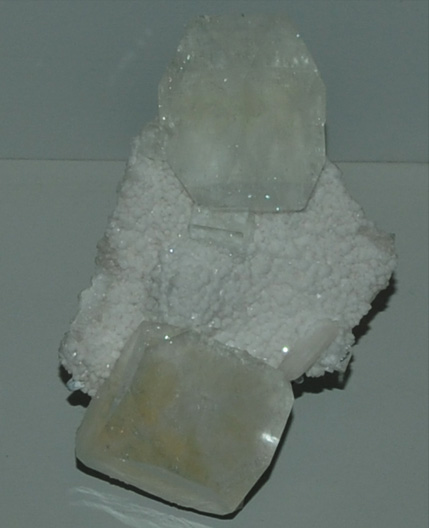
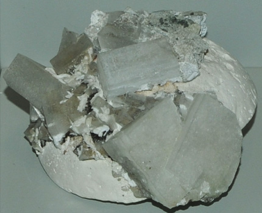
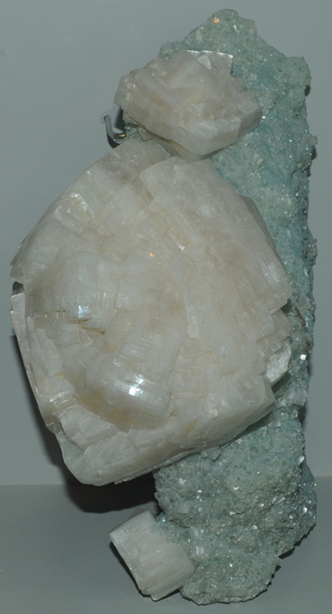
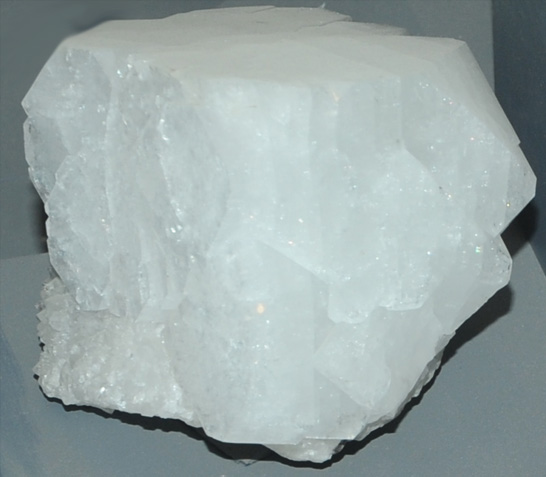

Fluorapophyllite
KCa4Si8O20(F,OH).8H2O
|

| These samples of fluorapophyllite are displayed in the Smithsonian Museum of Natural History. Fluorapophyllite is a silicate mineral with fluorine and potassium with the composition KCa4Si8O20(F,OH).8H2O. The sample at left is fluorapophylite with stilbite. It is about 12 cm across and is from Khadakvasla, Maharashtra, India .
|
|
This specimen of fluorapophyllite is about 25 cm across and is from La Luz mine, Guanajuato, Mexico.
| 
|
| 
|  This is fluorapophyllite with heulandite, calcite and quartz from Paterson, New Jersey. The sample is about 10 cm wide.
The sample at left is fluorapophyllite with stilbite. It is about 12 cm across and is from Rio Grande do Sul, Brazil. |
| 
This is fluorapophyllite with analcine and calcite. It is about 6 cm across and is from Bergen Hill, New Jersey.
|  This is fluorapophyllite with prehnite after laumontite. The sample is about 8 cm wide and is from Poona, Maharashtra, India.
|
| 

|  Above is fluorapophyllite with prehnite. The sample is about 25 cm high and is from Fairfax quarry, Centreville, Virginia.
Above left is fluorapophyllite with stilbite and quartz. It is about 5 cm wide.
The sample below left is fluorapophyllite with pectolite and laumontite. It is about 10 cm wide and is from Prospect Park, New Jersey.
|
| 
| This sample is fluorapophyllite with heulandite and quartz. It is about 15 cm wide and is from Nasik, Maharashtra, India. |
Mindat: Fluorapophyllite
Mindat gives apophyllite as synonymous.
|
Index |